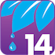
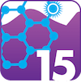

About
As we enter the fourth industrial revolution, technology is revolutionizing our ability to map nature. Satellite data provide a bird’s eye, yet incredibly detailed view of the Earth’s surface in real-time, while drones and mobile apps enable local communities and indigenous peoples to map their knowledge of local ecosystems. Spatial data empowers governments to make well-informed decisions to ensure that nature is not left behind in the information age. Through a partnership between the UNDP and UN Environment, the UN Biodiversity Lab will work closely with national governments to provide every country with the best available spatial data to make informed conservation decisions.
At the center of the UN Biodiversity Lab is a robust partnership between UNDP and UN Environment to provide high quality data for government representatives. UNDP and UN Environment’s direct engagement with over 140 governments allows for dynamic updates to the platform based on actual user needs. Likewise, engagement with 15 technical partners and data providers ensures the provision of cutting-edge data to take action for sustainable development. The UN Biodiversity Lab is not just another website; it is a platform for building partnerships among data providers and data users to ensure that governments have access and capacity to use cutting-edge spatial data to make key conservation and development decisions.
The UN Biodiversity Lab is an online platform that allows policymakers and other partners to access global data layers, upload and manipulate their own datasets, and query multiple datasets to provide key information on the Aichi Biodiversity Targets and nature-based Sustainable Development Goals. The core mission of the UN Biodiversity Lab is three-fold: to build spatial literacy to enable better decisions, to use spatial data as a vehicle for improved transparency and accountability, and to apply insights from spatial data across sectors to deliver on the Convention on Biological Diversity and the 2030 Agenda for Sustainable Development. The UN Biodiversity Lab data is powered by MapX, the only UN-backed geospatial mapping software which collects and verifies scientific data, brokers knowledge exchange for people in need of spatial solutions to environmental and natural resource challenges, and offers a customizable toolkit for analysis, visualization, and sharing. By creating a collaborative, open-source environment, the UN Biodiversity Lab is an inclusive and scalable data platform.
The UN Biodiversity Lab is an online platform that allows policymakers and other stakeholders to access global data layers, upload and manipulate their own datasets, and query multiple datasets for information and data related to spatial elements of the Aichi Biodiversity Targets (ABTs) and nature-based Sustainable Development Goals (SDGs). Using data available on UN Biodiversity Lab, policymakers can deliver on their commitments to the Convention on Biological Diversity through better conservation planning and reporting. This first iteration of the Lab supports policymakers to produce data-driven Sixth National Reports to the CBD. The UN Biodiversity Lab focuses on five ABTs that can be supported through the use of spatial data:
-
Aichi Biodiversity Target 5
By 2020, the rate of loss of all natural habitats, including forests, is at least halved and where feasible brought close to zero, and degradation and fragmentation is significantly reduced.
-
Aichi Biodiversity Target 11
By 2020, at least 17% of terrestrial and inland water, and 10% of coastal and marine areas, especially areas of particular importance for biodiversity and ecosystem services, are conserved through effectively and equitably managed, ecologically representative, and well-connected systems of protected areas and other effective area-based conservation measures, and integrated into the wider landscapes and seascapes.
-
Aichi Biodiversity Target 12
By 2020, the extinction of known threatened species has been prevented and their conservation status, particularly of those most in decline, has been improved and sustained.
-

Aichi Biodiversity Target 14
By 2020, ecosystems that provide essential services, including services related to water, and contribute to health, livelihoods and well-being, are restored and safeguarded, taking into account the needs of women, indigenous and local communities, and the poor and vulnerable.
-

Aichi Biodiversity Target 15
By 2020, ecosystem resilience and the contribution of biodiversity to carbon stocks has been enhanced, through conservation and restoration, including restoration of at least fifteen percent of degraded ecosystems, thereby contributing to climate change mitigation and adaptation, and to combating desertification.
Thanks to the support of our technical partners, stakeholders can access a wide array of UN-endorsed spatial datasets and interact with our team of experts in order to meet their conservation planning and reporting needs.
The UN Biodiversity Lab would not be possible without the support provided by the data providers below. If you are interested in contributing data, follow this link here to send us a data submission form.
We are continuously adding data, with planned additions from providers including: International Union for Conservation of Nature (IUCN), National Oceanic and Atmospheric Administration (NOAA-Modis), Alliance for Zero Extinctions, Birdlife, Food and Agriculture Organization of the United Nations (FAO), The Knowledge Network for Biocomplexity (KNB), Google Earth Engine, GRID Arendal, US Geological Survey (USGS), and the Flanders Marine Institute.
Contact us for further information
- General:
- info@unbiodiversitylab.org
- Support:
- support@unbiodiversitylab.org